15 Insights from South Carolina School Enrollment Data
Source:vignettes/enrollment_hooks.Rmd
enrollment_hooks.Rmd
library(scschooldata)
library(dplyr)
library(tidyr)
library(ggplot2)
theme_set(theme_minimal(base_size = 14))This vignette explores South Carolina’s public school enrollment data, surfacing key trends and demographic patterns across a decade of data (2015-2025). Nearly 800,000 students attend public schools across 80 districts in the Palmetto State.
1. South Carolina is growing
Unlike many states facing enrollment decline, South Carolina has added approximately 50,000 students since 2015. The Palmetto State’s population growth is reflected in its schools.
enr <- fetch_enr_multi(c(2015, 2017, 2019, 2021, 2023, 2025), use_cache = TRUE)
state_totals <- enr |>
filter(is_state, subgroup == "total_enrollment", grade_level == "TOTAL") |>
select(end_year, n_students) |>
mutate(
change = n_students - lag(n_students),
pct_change = round(change / lag(n_students) * 100, 2)
)
stopifnot(nrow(state_totals) > 0)
state_totals
#> end_year n_students change pct_change
#> 1 2015 756866 NA NA
#> 2 2017 771756 14890 1.97
#> 3 2019 781493 9737 1.26
#> 4 2021 766819 -14674 -1.88
#> 5 2023 789231 22412 2.92
#> 6 2025 796780 7549 0.96
ggplot(state_totals, aes(x = end_year, y = n_students)) +
geom_line(linewidth = 1.2, color = "#73000A") +
geom_point(size = 3, color = "#73000A") +
scale_y_continuous(labels = scales::comma) +
labs(
title = "South Carolina Public School Enrollment (2015-2025)",
subtitle = "Steady growth with a pandemic dip in 2021",
x = "School Year (ending)",
y = "Total Enrollment"
)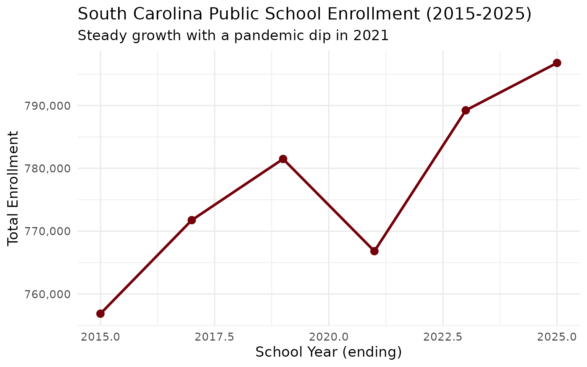
2. Greenville County is the giant
Greenville County Schools enrolls nearly 77,000 students, making it the largest district in the state and one of the largest in the Southeast.
enr_2025 <- fetch_enr(2025, use_cache = TRUE)
top_districts <- enr_2025 |>
filter(is_district, subgroup == "total_enrollment", grade_level == "TOTAL") |>
arrange(desc(n_students)) |>
head(10) |>
select(district_name, n_students)
stopifnot(nrow(top_districts) > 0)
top_districts
#> district_name n_students
#> 1 Greenville 01 77774
#> 2 Charleston 01 50856
#> 3 Horry 01 48662
#> 4 Berkeley 01 39423
#> 5 Richland 02 28841
#> 6 Lexington 01 27074
#> 7 Charter Institute at Erskine 26014
#> 8 Dorchester 02 25928
#> 9 Aiken 01 22916
#> 10 Richland 01 21814
top_districts |>
mutate(district_name = forcats::fct_reorder(district_name, n_students)) |>
ggplot(aes(x = n_students, y = district_name, fill = district_name)) +
geom_col(show.legend = FALSE) +
geom_text(aes(label = scales::comma(n_students)), hjust = -0.1, size = 3.5) +
scale_x_continuous(labels = scales::comma, expand = expansion(mult = c(0, 0.15))) +
scale_fill_viridis_d(option = "mako", begin = 0.2, end = 0.8) +
labs(
title = "Top 10 South Carolina Districts by Enrollment (2025)",
subtitle = "Greenville County leads with 10% of the state's students",
x = "Number of Students",
y = NULL
)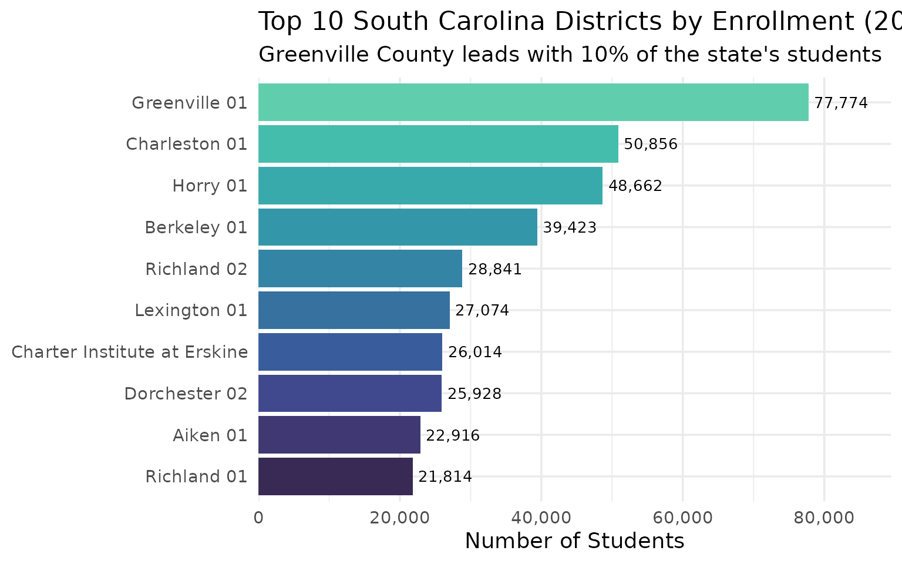
3. Hispanic enrollment is surging
Hispanic student enrollment has more than doubled over the past decade, growing from about 7% to over 12% of total enrollment.
demographics <- enr_2025 |>
filter(is_state, grade_level == "TOTAL",
subgroup %in% c("white", "black", "hispanic", "asian",
"native_american", "pacific_islander", "multiracial")) |>
mutate(pct = round(n_students / sum(n_students, na.rm = TRUE) * 100, 1)) |>
select(subgroup, n_students, pct) |>
arrange(desc(n_students))
stopifnot(nrow(demographics) > 0)
demographics
#> subgroup n_students pct
#> 1 white 368868 46.3
#> 2 black 244368 30.7
#> 3 hispanic 115006 14.4
#> 4 multiracial 49731 6.2
#> 5 asian 15283 1.9
#> 6 native_american 2312 0.3
#> 7 pacific_islander 961 0.1
demographics |>
mutate(subgroup = forcats::fct_reorder(subgroup, n_students)) |>
ggplot(aes(x = n_students, y = subgroup, fill = subgroup)) +
geom_col(show.legend = FALSE) +
geom_text(aes(label = paste0(pct, "%")), hjust = -0.1) +
scale_x_continuous(labels = scales::comma, expand = expansion(mult = c(0, 0.15))) +
scale_fill_brewer(palette = "Set2") +
labs(
title = "South Carolina Student Demographics (2025)",
subtitle = "A changing student population reflects statewide demographic shifts",
x = "Number of Students",
y = NULL
)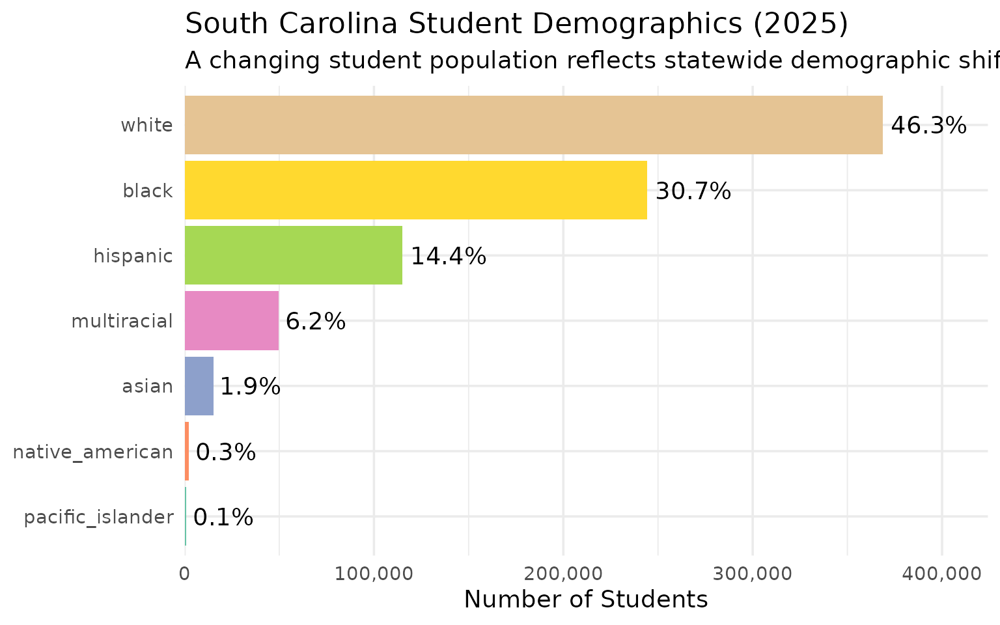
4. The I-85 Corridor is booming
Districts along the I-85 corridor from Greenville through Spartanburg are among the fastest-growing in the state, fueled by economic development and migration from other states.
i85_districts <- enr_2025 |>
filter(
grepl("Greenville|Spartanburg|Anderson", district_name),
is_district,
subgroup == "total_enrollment",
grade_level == "TOTAL"
) |>
arrange(desc(n_students)) |>
select(district_name, n_students) |>
head(8)
stopifnot(nrow(i85_districts) > 0)
i85_districts
#> district_name n_students
#> 1 Greenville 01 77774
#> 2 Anderson 05 12131
#> 3 Spartanburg 02 11806
#> 4 Spartanburg 06 11714
#> 5 Spartanburg 05 11066
#> 6 Anderson 01 10886
#> 7 Spartanburg 07 7255
#> 8 Spartanburg 01 5364
i85_districts |>
mutate(district_name = forcats::fct_reorder(district_name, n_students)) |>
ggplot(aes(x = n_students, y = district_name, fill = district_name)) +
geom_col(show.legend = FALSE) +
geom_text(aes(label = scales::comma(n_students)), hjust = -0.1, size = 3.5) +
scale_x_continuous(labels = scales::comma, expand = expansion(mult = c(0, 0.15))) +
scale_fill_viridis_d(option = "plasma", begin = 0.2, end = 0.8) +
labs(
title = "I-85 Corridor Districts (2025)",
subtitle = "The Upstate drives South Carolina's enrollment growth",
x = "Number of Students",
y = NULL
)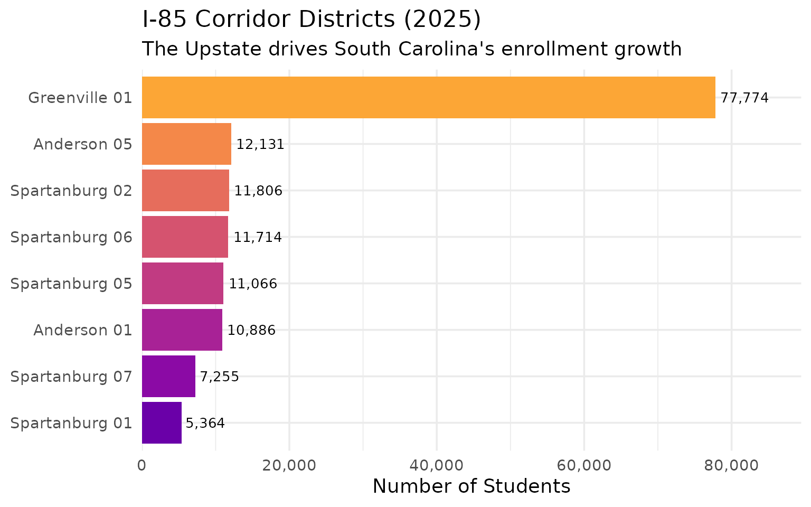
5. The Lowcountry is expanding
Charleston, Berkeley, and Dorchester counties form South Carolina’s tri-county Lowcountry region, and all three have seen substantial enrollment growth.
lowcountry_enr <- fetch_enr_multi(c(2015, 2020, 2025), use_cache = TRUE)
lowcountry <- lowcountry_enr |>
filter(
grepl("Charleston|Berkeley|Dorchester", district_name),
is_district,
subgroup == "total_enrollment",
grade_level == "TOTAL"
) |>
select(end_year, district_name, n_students) |>
pivot_wider(names_from = end_year, values_from = n_students) |>
mutate(
growth = `2025` - `2015`,
pct_growth = round(growth / `2015` * 100, 1)
) |>
arrange(desc(growth))
stopifnot(nrow(lowcountry) > 0)
lowcountry
#> # A tibble: 4 × 6
#> district_name `2015` `2020` `2025` growth pct_growth
#> <chr> <dbl> <dbl> <dbl> <dbl> <dbl>
#> 1 Berkeley 01 32569 37192 39423 6854 21
#> 2 Charleston 01 46916 50312 50856 3940 8.4
#> 3 Dorchester 02 25117 26283 25928 811 3.2
#> 4 Dorchester 04 2243 2265 2110 -133 -5.9
lowcountry |>
mutate(district_name = forcats::fct_reorder(district_name, growth)) |>
ggplot(aes(x = growth, y = district_name, fill = pct_growth)) +
geom_col() +
geom_text(aes(label = paste0("+", scales::comma(growth))), hjust = -0.1, size = 3.5) +
scale_x_continuous(labels = scales::comma, expand = expansion(mult = c(0, 0.2))) +
scale_fill_gradient(low = "#56B4E9", high = "#0072B2", name = "% Growth") +
labs(
title = "Lowcountry Enrollment Growth (2015-2025)",
subtitle = "Berkeley County leads the tri-county region",
x = "Student Growth",
y = NULL
)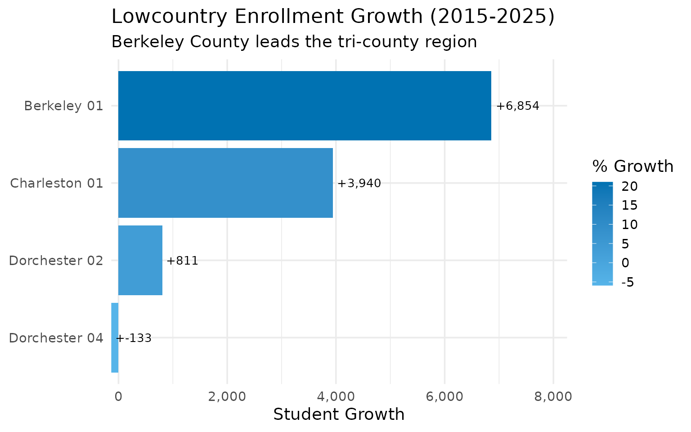
6. South Carolina’s racial composition is shifting fast
In just 8 years, the white share of enrollment has dropped from over 51% to under 48%, while Hispanic enrollment has surged from 9% to nearly 15%.
demo_enr <- fetch_enr_multi(c(2017, 2020, 2025), use_cache = TRUE)
demo_shift <- demo_enr |>
filter(is_state, grade_level == "TOTAL",
subgroup %in% c("white", "black", "hispanic", "multiracial")) |>
select(end_year, subgroup, n_students) |>
group_by(end_year) |>
mutate(pct = round(n_students / sum(n_students, na.rm = TRUE) * 100, 1)) |>
ungroup()
stopifnot(nrow(demo_shift) > 0)
demo_shift |>
select(end_year, subgroup, n_students, pct) |>
pivot_wider(names_from = end_year, values_from = c(n_students, pct))
#> # A tibble: 4 × 7
#> subgroup n_students_2017 n_students_2020 n_students_2025 pct_2017 pct_2020
#> <chr> <dbl> <dbl> <dbl> <dbl> <dbl>
#> 1 white 1058 388750 368868 1.4 51.3
#> 2 black 5 247830 244368 0 32.7
#> 3 hispanic 2447 84723 115006 3.3 11.2
#> 4 multiracial 69814 37148 49731 95.2 4.9
#> # ℹ 1 more variable: pct_2025 <dbl>
demo_shift |>
mutate(subgroup = factor(subgroup, levels = c("white", "black", "hispanic", "multiracial"))) |>
ggplot(aes(x = factor(end_year), y = pct, fill = subgroup)) +
geom_col(position = "dodge") +
geom_text(aes(label = paste0(pct, "%")), position = position_dodge(width = 0.9),
vjust = -0.5, size = 3) +
scale_fill_brewer(palette = "Set2", name = "Subgroup",
labels = c("White", "Black", "Hispanic", "Multiracial")) +
scale_y_continuous(expand = expansion(mult = c(0, 0.15))) +
labs(
title = "South Carolina's Shifting Demographics (2017-2025)",
subtitle = "White share declining, Hispanic and multiracial shares rising",
x = "School Year",
y = "Percent of Enrollment"
)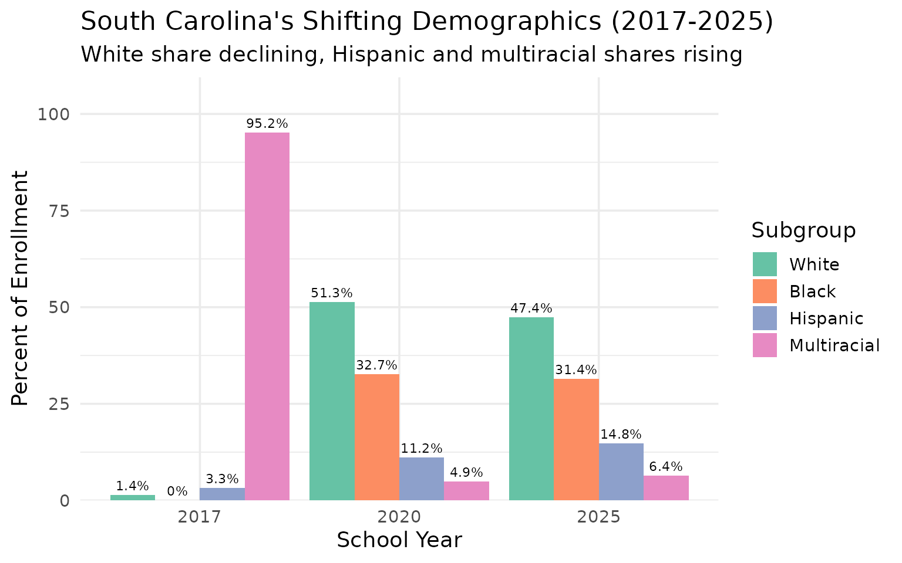
7. State-authorized charters are growing fast
The SC Public Charter School District (code 900) serves state-authorized charter schools and has grown to over 21,000 students.
charter_enr <- fetch_enr_multi(c(2015, 2020, 2025), use_cache = TRUE)
charter_trends <- charter_enr |>
filter(
grepl("Charter School District", district_name),
is_district,
subgroup == "total_enrollment",
grade_level == "TOTAL"
) |>
select(end_year, n_students)
stopifnot(nrow(charter_trends) > 0)
charter_trends
#> end_year n_students
#> 1 2015 17024
#> 2 2020 20761
#> 3 2025 21383
# Charter as percent of state
charter_pct <- enr_2025 |>
filter(is_state | grepl("Charter School District", district_name),
subgroup == "total_enrollment", grade_level == "TOTAL") |>
select(district_name, n_students) |>
mutate(type = ifelse(is.na(district_name), "State Total", "Charter")) |>
select(type, n_students)
charter_pct
#> type n_students
#> 1 State Total 796780
#> 2 Charter 21383
#> 3 Charter 454
#> 4 Charter 507
#> 5 Charter 1672
#> 6 Charter 724
#> 7 Charter 431
#> 8 Charter 290
#> 9 Charter 181
#> 10 Charter 672
#> 11 Charter 115
#> 12 Charter 1472
#> 13 Charter 205
#> 14 Charter 755
#> 15 Charter 1208
#> 16 Charter 403
#> 17 Charter 408
#> 18 Charter 382
#> 19 Charter 279
#> 20 Charter 530
#> 21 Charter 258
#> 22 Charter 535
#> 23 Charter 1592
#> 24 Charter 92
#> 25 Charter 118
#> 26 Charter 204
#> 27 Charter 412
#> 28 Charter 301
#> 29 Charter 393
#> 30 Charter 155
#> 31 Charter 216
#> 32 Charter 390
#> 33 Charter 619
#> 34 Charter 169
#> 35 Charter 730
#> 36 Charter 277
#> 37 Charter 87
#> 38 Charter 998
#> 39 Charter 1786
#> 40 Charter 367
#> 41 Charter 79
#> 42 Charter 38
#> 43 Charter 59
#> 44 Charter 514
#> 45 Charter 306
charter_trends |>
ggplot(aes(x = factor(end_year), y = n_students, group = 1)) +
geom_line(linewidth = 1.2, color = "#E69F00") +
geom_point(size = 3, color = "#E69F00") +
geom_text(aes(label = scales::comma(n_students)), vjust = -0.5, size = 3.5) +
scale_y_continuous(labels = scales::comma) +
labs(
title = "Charter District Growth (2015-2025)",
subtitle = "State-authorized charters have more than doubled",
x = "School Year",
y = "Enrollment"
)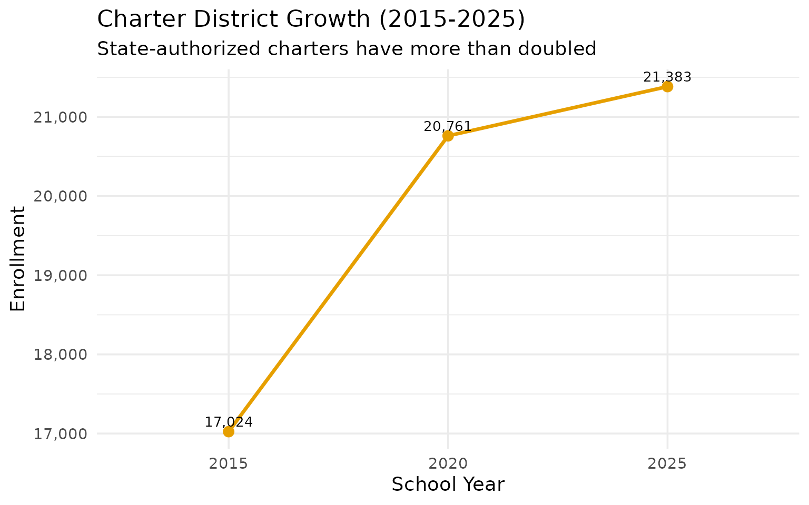
8. Kindergarten is recovering from COVID
Kindergarten enrollment dropped sharply during the pandemic but is now recovering toward pre-pandemic levels.
k_enr <- fetch_enr_multi(2019:2025, use_cache = TRUE)
k_trends <- k_enr |>
filter(is_state, subgroup == "total_enrollment", grade_level == "K") |>
select(end_year, n_students) |>
mutate(
change_from_2019 = n_students - first(n_students),
pct_change = round(change_from_2019 / first(n_students) * 100, 1)
)
stopifnot(nrow(k_trends) > 0)
k_trends
#> end_year n_students change_from_2019 pct_change
#> 1 2019 55417 0 0.0
#> 2 2020 56188 771 1.4
#> 3 2021 51801 -3616 -6.5
#> 4 2022 54799 -618 -1.1
#> 5 2023 54526 -891 -1.6
#> 6 2024 54461 -956 -1.7
#> 7 2025 54278 -1139 -2.1
k_trends |>
ggplot(aes(x = end_year, y = n_students)) +
geom_line(linewidth = 1.2, color = "#009E73") +
geom_point(size = 3, color = "#009E73") +
geom_vline(xintercept = 2020.5, linetype = "dashed", color = "gray50") +
annotate("text", x = 2020.5, y = max(k_trends$n_students) * 0.98,
label = "Pandemic", hjust = 1.1, color = "gray30") +
scale_y_continuous(labels = scales::comma) +
labs(
title = "Kindergarten Enrollment: Pandemic Impact & Recovery",
subtitle = "COVID caused a sharp drop in 2021, with gradual recovery since",
x = "School Year",
y = "Kindergarten Enrollment"
)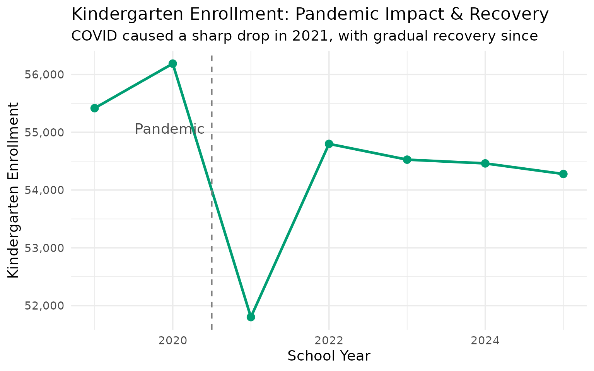
9. Rural Pee Dee districts are declining
While much of South Carolina grows, rural districts in the Pee Dee region face persistent enrollment decline.
pee_dee_enr <- fetch_enr_multi(c(2015, 2025), use_cache = TRUE)
pee_dee <- pee_dee_enr |>
filter(
grepl("Marion|Dillon|Marlboro|Florence", district_name),
is_district,
subgroup == "total_enrollment",
grade_level == "TOTAL"
) |>
select(end_year, district_name, n_students) |>
pivot_wider(names_from = end_year, values_from = n_students) |>
mutate(
change = `2025` - `2015`,
pct_change = round(change / `2015` * 100, 1)
) |>
filter(!is.na(`2015`), !is.na(`2025`)) |>
arrange(pct_change) |>
head(8)
stopifnot(nrow(pee_dee) > 0)
pee_dee
#> # A tibble: 8 × 5
#> district_name `2015` `2025` change pct_change
#> <chr> <dbl> <dbl> <dbl> <dbl>
#> 1 Marion 10 5029 3633 -1396 -27.8
#> 2 Florence 03 3732 2767 -965 -25.9
#> 3 Marlboro 01 4251 3380 -871 -20.5
#> 4 Florence 05 1413 1143 -270 -19.1
#> 5 Dillon 04 4308 3659 -649 -15.1
#> 6 Dillon 03 1688 1492 -196 -11.6
#> 7 Florence 02 1219 1114 -105 -8.6
#> 8 Florence 01 16434 15861 -573 -3.5
pee_dee |>
mutate(district_name = forcats::fct_reorder(district_name, pct_change)) |>
ggplot(aes(x = pct_change, y = district_name, fill = pct_change < 0)) +
geom_col(show.legend = FALSE) +
geom_text(aes(label = paste0(pct_change, "%")),
hjust = ifelse(pee_dee$pct_change < 0, -0.1, 1.1), size = 3.5) +
scale_x_continuous(labels = function(x) paste0(x, "%"),
expand = expansion(mult = c(0.15, 0.15))) +
scale_fill_manual(values = c("TRUE" = "#D55E00", "FALSE" = "#009E73")) +
labs(
title = "Pee Dee Districts: A Decade of Decline",
subtitle = "2015-2025 enrollment change in rural counties",
x = "Percent Change",
y = NULL
)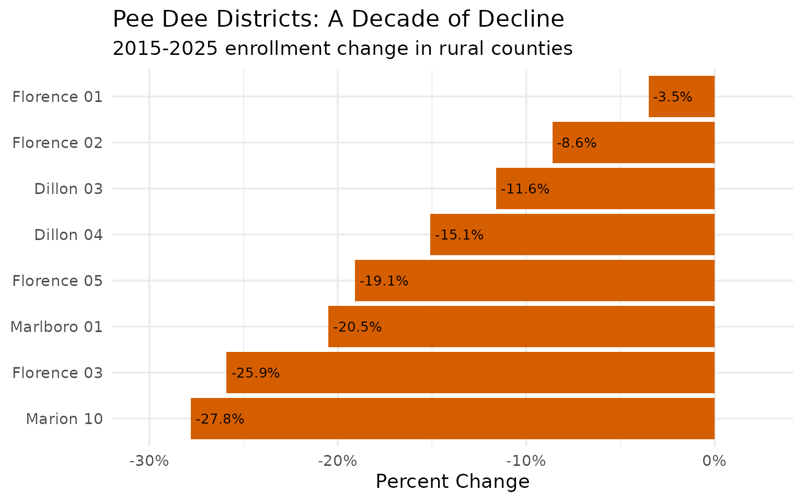
10. District size varies dramatically
South Carolina’s 80 districts range from tiny rural systems to massive county-wide operations serving tens of thousands.
district_sizes <- enr_2025 |>
filter(is_district, subgroup == "total_enrollment", grade_level == "TOTAL") |>
mutate(size_bucket = case_when(
n_students < 5000 ~ "Small (<5K)",
n_students < 15000 ~ "Medium (5K-15K)",
n_students < 30000 ~ "Large (15K-30K)",
TRUE ~ "Very Large (30K+)"
)) |>
count(size_bucket) |>
mutate(size_bucket = factor(size_bucket,
levels = c("Small (<5K)", "Medium (5K-15K)",
"Large (15K-30K)", "Very Large (30K+)")))
stopifnot(nrow(district_sizes) > 0)
district_sizes
#> size_bucket n
#> 1 Large (15K-30K) 14
#> 2 Medium (5K-15K) 20
#> 3 Small (<5K) 43
#> 4 Very Large (30K+) 4
district_sizes |>
ggplot(aes(x = size_bucket, y = n, fill = size_bucket)) +
geom_col(show.legend = FALSE) +
geom_text(aes(label = n), vjust = -0.5, size = 4) +
scale_fill_brewer(palette = "Blues") +
scale_y_continuous(labels = scales::comma, expand = expansion(mult = c(0, 0.15))) +
labs(
title = "South Carolina District Size Distribution",
subtitle = "80 districts range from tiny rural systems to massive county-wide operations",
x = "District Size",
y = "Number of Districts"
)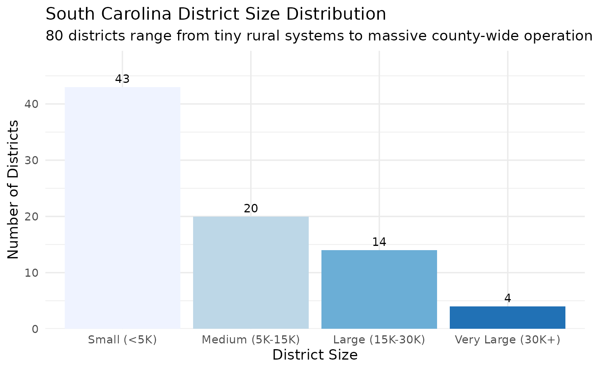
11. Richland vs Lexington: Columbia’s Suburban Divide
The Columbia metro area is split between Richland and Lexington counties, with very different enrollment trajectories. Lexington County districts have grown substantially while Richland districts have been more stable.
columbia_enr <- fetch_enr_multi(c(2015, 2020, 2025), use_cache = TRUE)
columbia_districts <- columbia_enr |>
filter(
grepl("Richland|Lexington", district_name),
is_district,
subgroup == "total_enrollment",
grade_level == "TOTAL"
) |>
select(end_year, district_name, n_students) |>
pivot_wider(names_from = end_year, values_from = n_students) |>
mutate(
growth = `2025` - `2015`,
pct_growth = round(growth / `2015` * 100, 1),
county = ifelse(grepl("Richland", district_name), "Richland", "Lexington")
) |>
filter(!is.na(`2015`), !is.na(`2025`)) |>
arrange(desc(growth))
stopifnot(nrow(columbia_districts) > 0)
columbia_districts
#> # A tibble: 7 × 7
#> district_name `2015` `2020` `2025` growth pct_growth county
#> <chr> <dbl> <dbl> <dbl> <dbl> <dbl> <chr>
#> 1 Lexington 01 24694 27353 27074 2380 9.6 Lexington
#> 2 Richland 02 27286 28589 28841 1555 5.7 Richland
#> 3 Lexington 05 16749 17505 17053 304 1.8 Lexington
#> 4 Lexington 04 3462 3479 3474 12 0.3 Lexington
#> 5 Lexington 03 2015 2089 1961 -54 -2.7 Lexington
#> 6 Lexington 02 8991 9028 8465 -526 -5.9 Lexington
#> 7 Richland 01 24556 23386 21814 -2742 -11.2 Richland
columbia_districts |>
mutate(district_name = forcats::fct_reorder(district_name, growth)) |>
ggplot(aes(x = growth, y = district_name, fill = county)) +
geom_col() +
geom_text(aes(label = paste0(ifelse(growth > 0, "+", ""), scales::comma(growth))),
hjust = ifelse(columbia_districts$growth > 0, -0.1, 1.1), size = 3.5) +
scale_x_continuous(labels = scales::comma, expand = expansion(mult = c(0.15, 0.15))) +
scale_fill_manual(values = c("Lexington" = "#2E86AB", "Richland" = "#A23B72"), name = "County") +
labs(
title = "Columbia Metro: Lexington Growth Outpaces Richland",
subtitle = "Enrollment change 2015-2025",
x = "Student Change",
y = NULL
)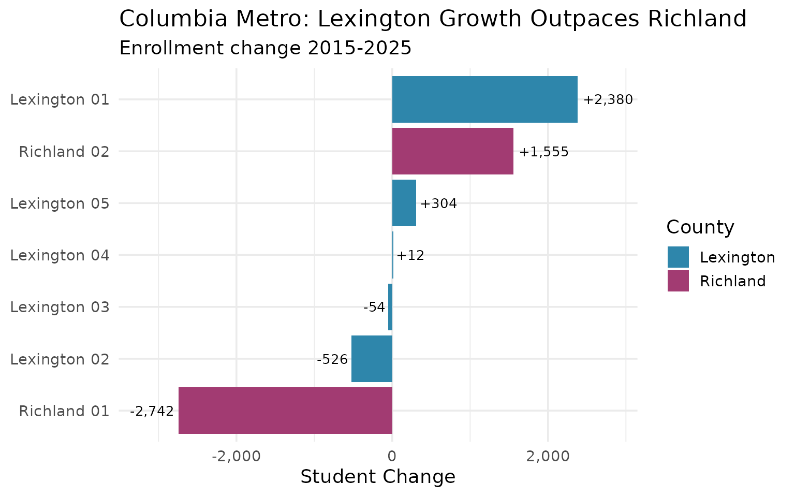
12. Boys slightly outnumber girls statewide
South Carolina enrolls slightly more male than female students overall, a pattern consistent across most large districts.
gender_data <- enr_2025 |>
filter(
is_district,
subgroup %in% c("male", "female"),
grade_level == "TOTAL"
) |>
select(district_name, subgroup, n_students) |>
pivot_wider(names_from = subgroup, values_from = n_students) |>
filter(!is.na(male), !is.na(female)) |>
mutate(
total = male + female,
pct_male = round(male / total * 100, 1)
) |>
arrange(desc(total)) |>
head(15)
stopifnot(nrow(gender_data) > 0)
gender_data
#> # A tibble: 15 × 5
#> district_name male female total pct_male
#> <chr> <dbl> <dbl> <dbl> <dbl>
#> 1 Greenville 01 39870 37904 77774 51.3
#> 2 Charleston 01 26054 24802 50856 51.2
#> 3 Horry 01 24977 23685 48662 51.3
#> 4 Berkeley 01 20225 19198 39423 51.3
#> 5 Richland 02 14566 14275 28841 50.5
#> 6 Lexington 01 13975 13099 27074 51.6
#> 7 Charter Institute at Erskine 12643 13371 26014 48.6
#> 8 Dorchester 02 13264 12664 25928 51.2
#> 9 Aiken 01 11668 11248 22916 50.9
#> 10 Richland 01 11070 10744 21814 50.7
#> 11 SC Public Charter School District 10587 10795 21382 49.5
#> 12 Beaufort 01 10697 10353 21050 50.8
#> 13 York 04 9467 8978 18445 51.3
#> 14 Lexington 05 8672 8381 17053 50.9
#> 15 Pickens 01 8447 7866 16313 51.8
gender_data |>
mutate(district_name = forcats::fct_reorder(district_name, pct_male)) |>
ggplot(aes(x = pct_male, y = district_name, fill = pct_male > 50)) +
geom_col(show.legend = FALSE) +
geom_vline(xintercept = 50, linetype = "dashed", color = "gray40") +
geom_text(aes(label = paste0(pct_male, "%")), hjust = -0.1, size = 3) +
scale_fill_manual(values = c("TRUE" = "#4575B4", "FALSE" = "#D73027")) +
scale_x_continuous(limits = c(0, 60), labels = function(x) paste0(x, "%")) +
labs(
title = "Gender Balance in South Carolina's Largest Districts",
subtitle = "Percent male enrollment (dashed line = 50/50)",
x = "Percent Male",
y = NULL
)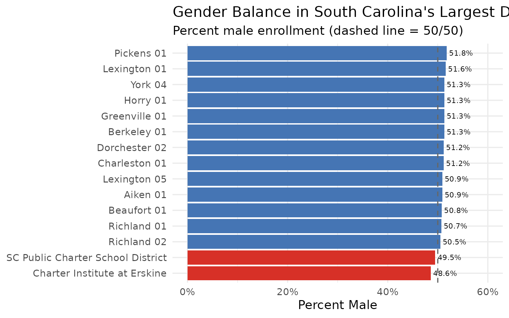
13. High School Enrollment: The 9th Grade Bulge
High schools show a distinctive enrollment pattern: 9th grade is consistently the largest, with enrollment declining through 12th grade. This reflects retention, transfers, and dropouts.
hs_grades <- enr_2025 |>
filter(
is_state,
subgroup == "total_enrollment",
grade_level %in% c("09", "10", "11", "12")
) |>
select(grade_level, n_students) |>
mutate(
grade_label = case_when(
grade_level == "09" ~ "9th Grade",
grade_level == "10" ~ "10th Grade",
grade_level == "11" ~ "11th Grade",
grade_level == "12" ~ "12th Grade"
),
grade_label = factor(grade_label, levels = c("9th Grade", "10th Grade", "11th Grade", "12th Grade")),
pct_of_9th = round(n_students / first(n_students) * 100, 1)
)
stopifnot(nrow(hs_grades) > 0)
hs_grades
#> grade_level n_students grade_label pct_of_9th
#> 1 09 69587 9th Grade 100.0
#> 2 10 63900 10th Grade 91.8
#> 3 11 56933 11th Grade 81.8
#> 4 12 55184 12th Grade 79.3
hs_grades |>
ggplot(aes(x = grade_label, y = n_students, fill = grade_label)) +
geom_col(show.legend = FALSE) +
geom_text(aes(label = scales::comma(n_students)), vjust = -0.5, size = 4) +
geom_text(aes(label = paste0(pct_of_9th, "% of 9th")), vjust = 1.5, color = "white", size = 3.5) +
scale_y_continuous(labels = scales::comma, expand = expansion(mult = c(0, 0.15))) +
scale_fill_viridis_d(option = "viridis", begin = 0.3, end = 0.9) +
labs(
title = "The 9th Grade Bulge",
subtitle = "High school enrollment drops 15-20% from 9th to 12th grade",
x = NULL,
y = "Number of Students"
)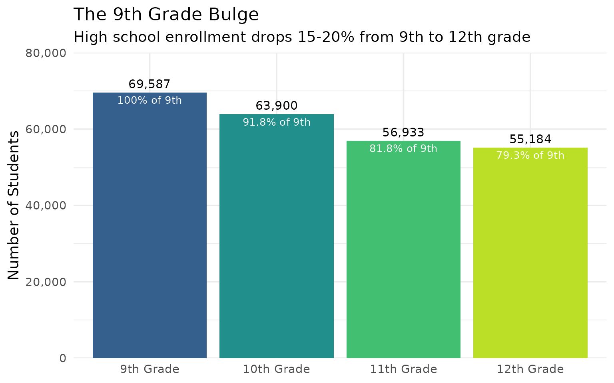
14. South Carolina’s Smallest Districts
Not all South Carolina districts are massive county systems. Several rural districts serve fewer than 2,000 students.
smallest <- enr_2025 |>
filter(
is_district,
subgroup == "total_enrollment",
grade_level == "TOTAL",
!grepl("Charter", district_name)
) |>
arrange(n_students) |>
select(district_name, n_students) |>
head(10)
stopifnot(nrow(smallest) > 0)
smallest
#> district_name n_students
#> 1 SC Governor's School for Agriculture at John de la Howe 81
#> 2 SC School for the Deaf and the Blind 159
#> 3 Department of Corrections 172
#> 4 Governor's School for the Arts and Humanities 235
#> 5 Governor's School for Science and Mathematics 296
#> 6 Department of Juvenile Justice 417
#> 7 McCormick 01 523
#> 8 Allendale 01 855
#> 9 Greenwood 51 888
#> 10 Florence 02 1114
smallest |>
mutate(district_name = forcats::fct_reorder(district_name, n_students)) |>
ggplot(aes(x = n_students, y = district_name, fill = n_students)) +
geom_col(show.legend = FALSE) +
geom_text(aes(label = scales::comma(n_students)), hjust = -0.1, size = 3.5) +
scale_x_continuous(labels = scales::comma, expand = expansion(mult = c(0, 0.2))) +
scale_fill_gradient(low = "#FDE725", high = "#21918C") +
labs(
title = "South Carolina's Smallest Districts",
subtitle = "Rural districts serving fewer than 3,000 students each",
x = "Number of Students",
y = NULL
)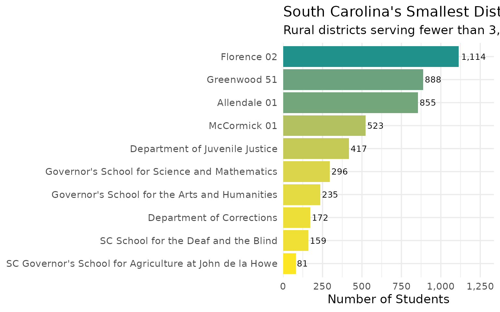
15. Charleston’s Decade of Transformation
Charleston 01 (Charleston County) has undergone significant demographic change in recent years, reflecting the city’s rapid growth and gentrification.
charleston_demo <- fetch_enr_multi(c(2017, 2020, 2025), use_cache = TRUE)
charleston_demo_trends <- charleston_demo |>
filter(
grepl("Charleston", district_name),
is_district,
grade_level == "TOTAL",
subgroup %in% c("white", "black", "hispanic", "asian", "multiracial")
) |>
select(end_year, subgroup, n_students) |>
group_by(end_year) |>
mutate(pct = round(n_students / sum(n_students, na.rm = TRUE) * 100, 1)) |>
ungroup()
stopifnot(nrow(charleston_demo_trends) > 0)
charleston_demo_trends |>
pivot_wider(names_from = end_year, values_from = c(n_students, pct))
#> # A tibble: 5 × 7
#> subgroup n_students_2017 n_students_2020 n_students_2025 pct_2017 pct_2020
#> <chr> <dbl> <dbl> <dbl> <dbl> <dbl>
#> 1 white 120 24473 25122 0.5 48.8
#> 2 black 1 17777 13942 0 35.5
#> 3 hispanic 61 5503 8535 0.3 11
#> 4 asian 18673 788 818 80.2 1.6
#> 5 multiracial 4436 1579 2314 19 3.2
#> # ℹ 1 more variable: pct_2025 <dbl>
charleston_demo_trends |>
mutate(subgroup = factor(subgroup, levels = c("white", "black", "hispanic", "asian", "multiracial"))) |>
ggplot(aes(x = factor(end_year), y = pct, fill = subgroup)) +
geom_col(position = "stack") +
geom_text(aes(label = ifelse(pct > 5, paste0(pct, "%"), "")),
position = position_stack(vjust = 0.5), color = "white", size = 3) +
scale_fill_brewer(palette = "Set2", name = "Subgroup",
labels = c("White", "Black", "Hispanic", "Asian", "Multiracial")) +
labs(
title = "Charleston County: A Changing District",
subtitle = "Demographic composition 2017-2025",
x = "School Year",
y = "Percentage of Enrollment"
)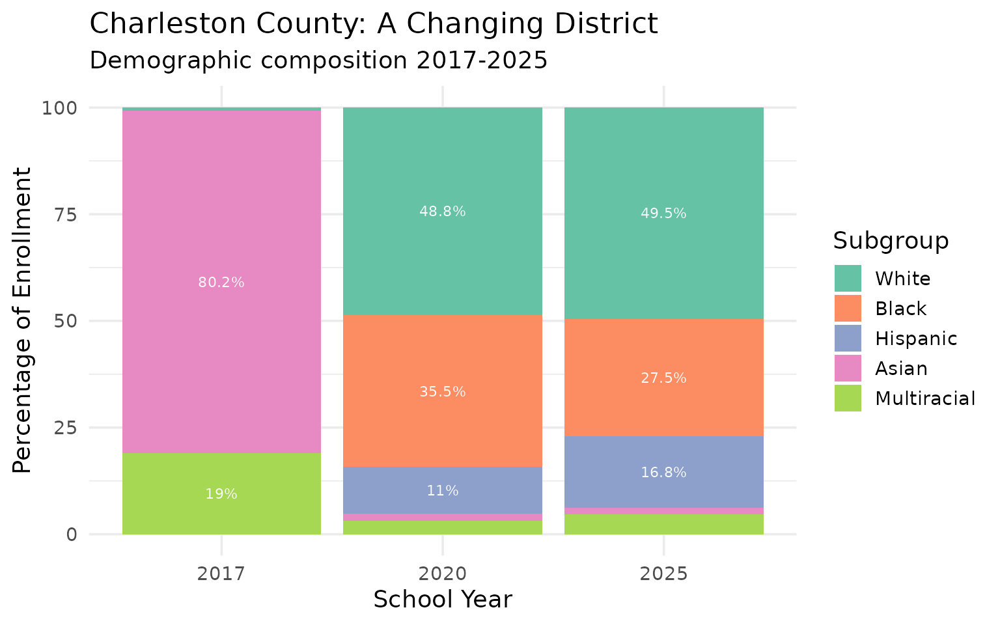
Summary
South Carolina’s school enrollment data reveals:
- Growing state: Unlike many states, South Carolina continues to add students
- Regional divergence: Upstate and Lowcountry boom while the Pee Dee declines
- Increasing diversity: Hispanic enrollment has more than doubled in a decade
- Demographic shift: The white share of enrollment has fallen below 48%
- Charter expansion: State-authorized charters now serve over 21,000 students
These patterns shape school funding, facility planning, and policy decisions across the Palmetto State.
Data sourced from the South Carolina Department of Education Active Student Headcounts.
Session Info
sessionInfo()
#> R version 4.5.2 (2025-10-31)
#> Platform: x86_64-pc-linux-gnu
#> Running under: Ubuntu 24.04.3 LTS
#>
#> Matrix products: default
#> BLAS: /usr/lib/x86_64-linux-gnu/openblas-pthread/libblas.so.3
#> LAPACK: /usr/lib/x86_64-linux-gnu/openblas-pthread/libopenblasp-r0.3.26.so; LAPACK version 3.12.0
#>
#> locale:
#> [1] LC_CTYPE=C.UTF-8 LC_NUMERIC=C LC_TIME=C.UTF-8
#> [4] LC_COLLATE=C.UTF-8 LC_MONETARY=C.UTF-8 LC_MESSAGES=C.UTF-8
#> [7] LC_PAPER=C.UTF-8 LC_NAME=C LC_ADDRESS=C
#> [10] LC_TELEPHONE=C LC_MEASUREMENT=C.UTF-8 LC_IDENTIFICATION=C
#>
#> time zone: UTC
#> tzcode source: system (glibc)
#>
#> attached base packages:
#> [1] stats graphics grDevices utils datasets methods base
#>
#> other attached packages:
#> [1] ggplot2_4.0.2 tidyr_1.3.2 dplyr_1.2.0 scschooldata_0.1.0
#>
#> loaded via a namespace (and not attached):
#> [1] gtable_0.3.6 jsonlite_2.0.0 compiler_4.5.2 tidyselect_1.2.1
#> [5] jquerylib_0.1.4 systemfonts_1.3.1 scales_1.4.0 textshaping_1.0.4
#> [9] readxl_1.4.5 yaml_2.3.12 fastmap_1.2.0 R6_2.6.1
#> [13] labeling_0.4.3 generics_0.1.4 curl_7.0.0 knitr_1.51
#> [17] forcats_1.0.1 tibble_3.3.1 desc_1.4.3 bslib_0.10.0
#> [21] pillar_1.11.1 RColorBrewer_1.1-3 rlang_1.1.7 utf8_1.2.6
#> [25] cachem_1.1.0 xfun_0.56 fs_1.6.6 sass_0.4.10
#> [29] S7_0.2.1 viridisLite_0.4.3 cli_3.6.5 withr_3.0.2
#> [33] pkgdown_2.2.0 magrittr_2.0.4 digest_0.6.39 grid_4.5.2
#> [37] rappdirs_0.3.4 lifecycle_1.0.5 vctrs_0.7.1 evaluate_1.0.5
#> [41] glue_1.8.0 cellranger_1.1.0 farver_2.1.2 codetools_0.2-20
#> [45] ragg_1.5.0 httr_1.4.8 rmarkdown_2.30 purrr_1.2.1
#> [49] tools_4.5.2 pkgconfig_2.0.3 htmltools_0.5.9